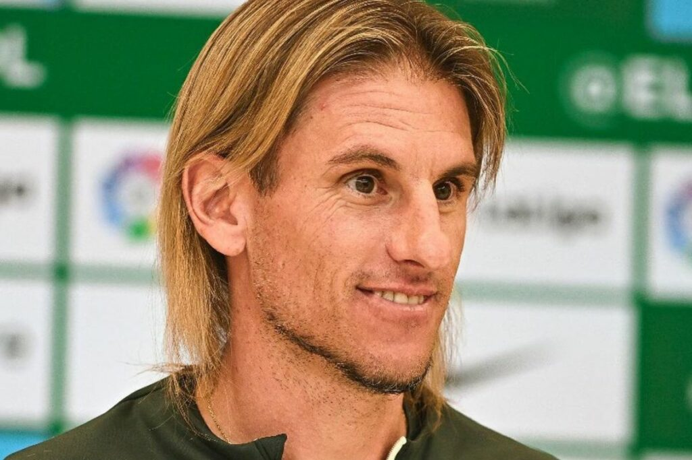

LIONEL SCALONI
Lionel Sebastián Scaloni es un exfutbolista y entrenador de fútbol argentino. Como futbolista jugaba como lateral derecho o centrocampista. Wikipedia Nacimiento: 16 de mayo de 1978 (edad 46 años), Pujato, Argentina Entrenador: Selección de fútbol de Argentina Equipo entrenado: Selección de fútbol de Argentina (Director técnico, desde 2018)
DORIVAL JUNIOR
fue presentado como nuevo entrenador de la Selección de Brasil. En su presentación como nuevo entrenador de la Selección Brasileña, Dorival Júnior admitió que la Canarinha vive un momento muy difícil y que urge superarlo

MARCELO BIALASA
Con ilusión renovada y enfocado en lo que viene, Uruguay afronta esta Copa América frotándose las manos. El equipo que dirige Marcelo Bielsa viene de obtener resultados muy positivos en las Eliminatorias Sudamericanas, con la idea de juego del DT argentino calando de gran forma en el plantel

SEBASTIAN BECCACECE
Sebastián Andrés Beccacece (Rosario, 17 de diciembre de 1980) es un entrenador de fútbol argentino. Actualmente dirige a la Selección de Ecuador.
